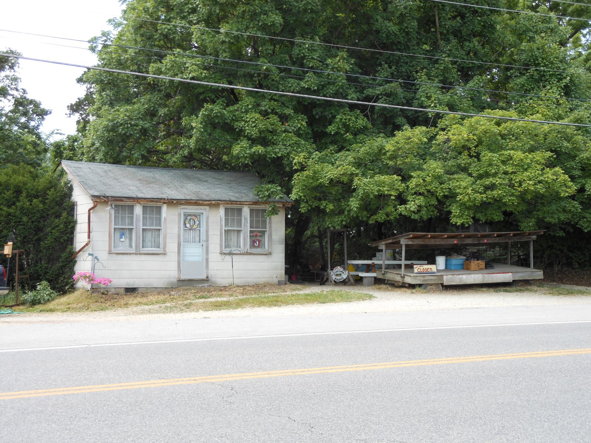
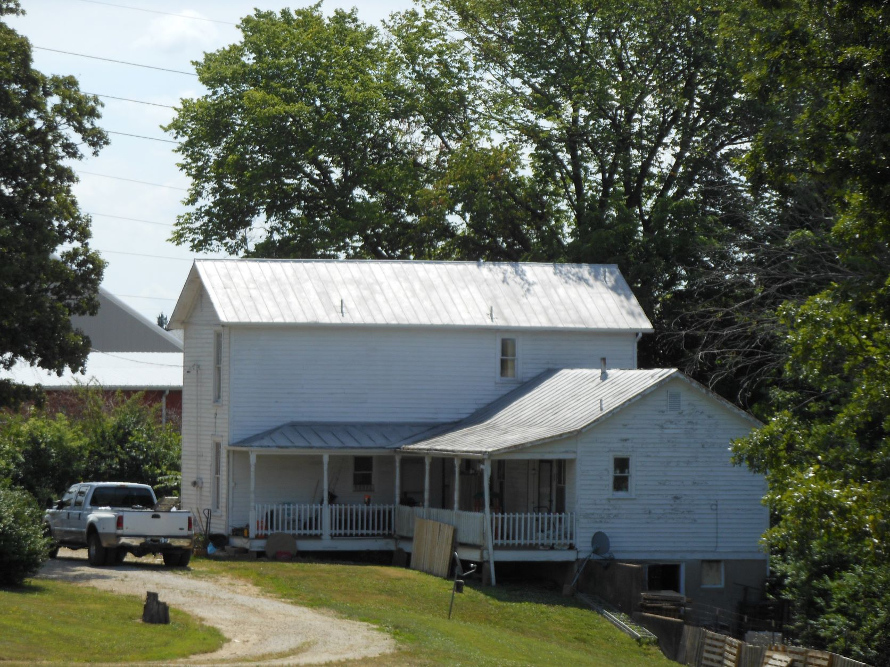
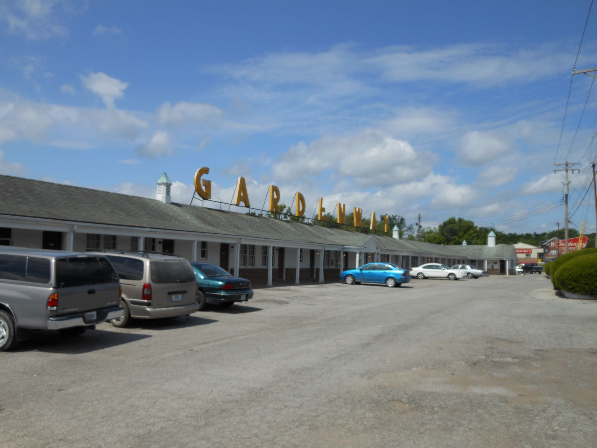
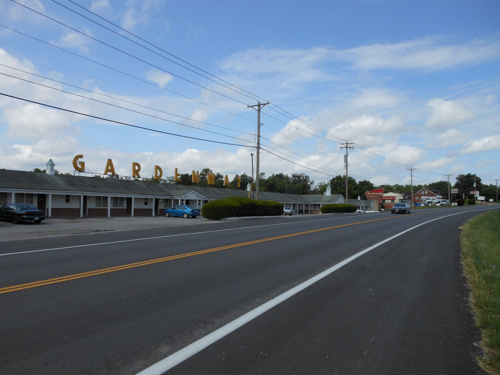
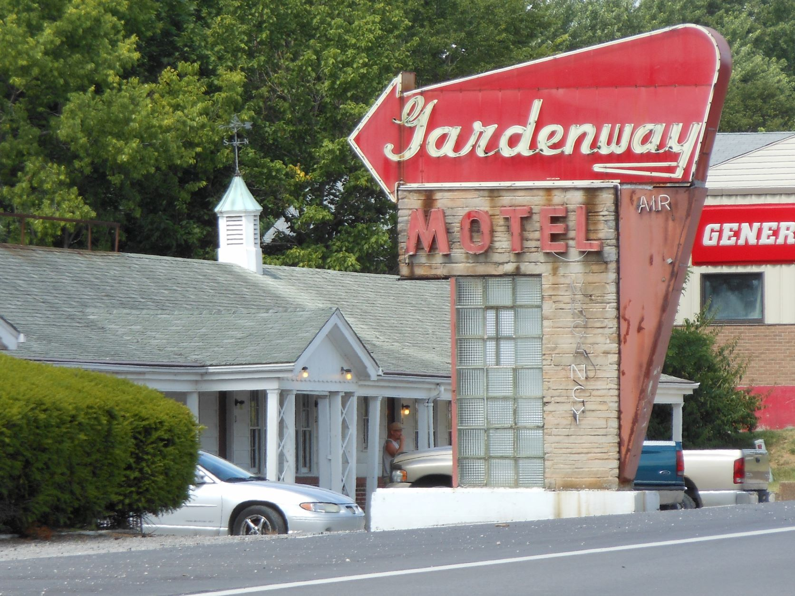

June 10, 2012 - St. Clair, MO

St. Clair, MO - Cottage and Roadside Market

St. Clair, MO - Missouri Homestead

St. Clair, MO - Gardenway Motel (now closed)

St. Clair, MO - Gardenway Motel (now closed)

St. Clair, MO - Gardenway Motel (now closed)